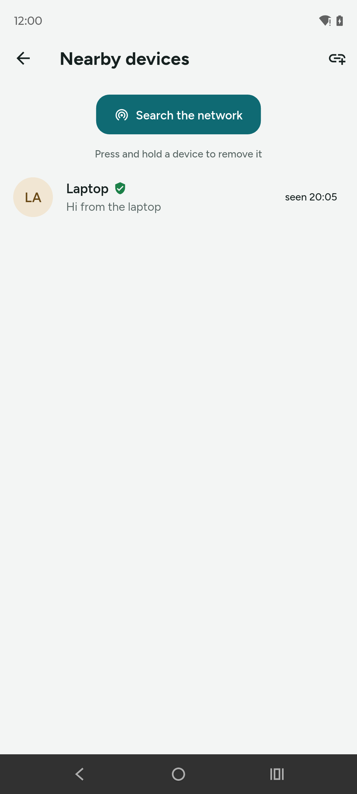
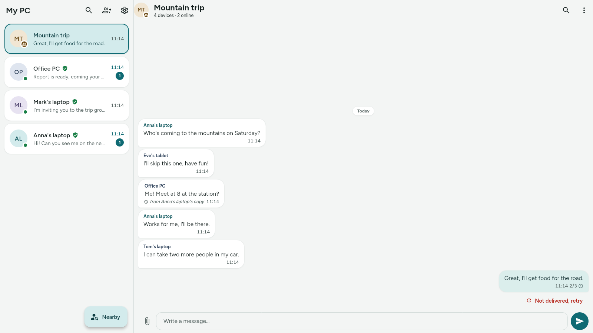

Messages and files travel straight from one device to the other, over your own Wi-Fi.
No server, no account, no cloud. Always encrypted.

Latest release: checking…
A shortcut in the Start menu, an entry in the system uninstall list and one place for updates. It installs for your own account, so it never asks for an administrator password.
Download installer
Unpack it anywhere and run chatt.exe. It writes nothing to
the system beyond its own data.
An APK to install from the phone. Android asks for permission to install from this source the first time.
Download APKThe installer is not signed with a certificate, so SmartScreen shows “Windows protected your PC”. Choose “More info”, then “Run anyway”. Later releases come through Settings, under Updates: “Check now” asks at once, and with the daily check turned on the app asks by itself. “Download and install” then fetches the new release and starts the installer for you. The portable copy shows the release page, since a new one is unpacked by hand.
Conversations with one device or a whole group, file transfers the receiver agrees to, and encryption from the first message on.
One broadcast across the network and the devices see each other. When the router isolates its clients, you add the other device by IP address.
Stored on your side, delivered, acknowledged. A failed one retries with a single click, and when the other person's address changes, the app finds them again by identity.
Up to 32 devices in one conversation, still with no server. Each message goes from its author straight to every member, and a device that was away catches up when it meets the others again. Only the owner adds or removes devices, and each one joins only after saying yes.
The receiver first sees the name, the size and the checksum. An interrupted transfer resumes where it stopped and is verified with sha256.
A link from the browser, a photo from the gallery, a document from the file manager: Chatt sits in Android's Share sheet, and the chosen conversation opens with the text in the field and the files above it. Nothing leaves before you press Send.
After a reinstall or on a new phone, the other device hands its copy of the conversation back, with the files if you want them. Nothing moves until the other side says yes on a card.
The conversation database sits encrypted, and the system holds the key: Keystore on Android, DPAPI on Windows.
Export data writes one ZIP with the conversations, the devices, the settings and, if you like, the received files, as JSON for programs and text for reading. No private, session or database key goes into it.
Thirty days of what the app did and what went wrong, kept in the encrypted database and never with message text, typed text or keys. Export it alone to attach to a bug report.
A foreground service on Android, a tray icon on Windows. Messages arrive with the window closed.
A link in a message can show the page's title, description and image, and opening one always asks first and shows which server it really leads to. Previews stay off until you turn them on.
Calm, Precise and Warm, each light and dark, with four backgrounds or none. English and Polish, two panes in a wide window, one screen on a phone.
Each sits behind its own switch in Settings, off from the start. An add-on that is off shows on no other screen and starts nothing.
For a guest network that keeps devices apart, mobile data or a room with no router. The same messages and files go over the radio within some ten metres, and the app picks the road by itself.
A confirmed device on another network, say a PC at home and a phone on mobile data. Messages and files go straight between the two and are never stored on a server, though not every network lets them through. Public STUN servers and BitTorrent DHT nodes see the IP address and when it connects. None of them sees the content.
Tap a field on the phone and type into it with the computer's keyboard, in any app. The phone asks first, Stop stays on screen for as long as it lasts, and both devices keep a history of what was typed.
The same set of screens on a phone and on a monitor.





Messages and files go straight from one device to the other. Chatt has no server, so nothing is kept anywhere along the way.
Every connection agrees on its own key. Recorded traffic stays unreadable even after a device is stolen.
A QR code or a six-digit code to compare on both screens. Once confirmed, you know whose key is on the other side.
No telemetry, no ads, nothing collected. Three things can reach outside your network, and each stays off until you turn it on: the check for a newer release, previews for links, and the Internet add-on.